Inleiding
Deze handleiding beschrijft de functionaliteiten van de MyParcel extensie voor Magento 2.
Met deze Magento 2 extensie kun je vier soorten MyParcel zendingen aanmaken:
- Normaal (Binnen Nederland met uitgebreide bezorgmoment opties en verzendmoment opties)
- Pakketten naar buitenland, alleen voor de EU.
- Brievenbuspakje binnen Nederland
- Ongefrankeerd label
1. Installatie en update
1.1 Technische vereisten
Om de MyParcel Magento 2 extensie te gebruiken dient uw server aan één van de volgende onderstaande vereisten te voldoen:
- PHP versie 5.6
- PHP versie 7 of hoger
De onderstaande Magento versie wordt ondersteund:
- Community 2.x
1.2 Installatie
De MyParcel Magento 2 extensie is niet te downloaden via de Magento Marketplace.
Voor het installeren adviseren wij om een backup te maken van jouw Magento 2 omgeving. De extensie is te
verkrijgen via de terminal, raadpleeg jouw webbeheerder. Jouw webbeheerder kan het volgende commando in de
root van de website (in bv. public_html) uitvoeren om de MyParcel extensie te installeren:
composer require myparcelnl/magento
Installeer je voor het eerst een extensie in jouw Magento omgeving?
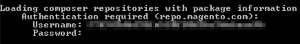
Om de Username en Password te verkrijgen ga je naar https://marketplace.magento.com. Hier kun je een account aanmaken en inloggen. Ga daarna in My Account naar Marketplace. Klik vervolgens op My Access Keys en op Magento 2. 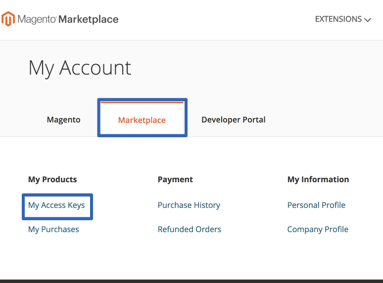
Hier zie je public key en een private key. De public key kan je in de terminal gebruiken als username en de private key kan je gebruiken als Password. Zie je de keys nog niet? Klik dan op Create A New Access Key.
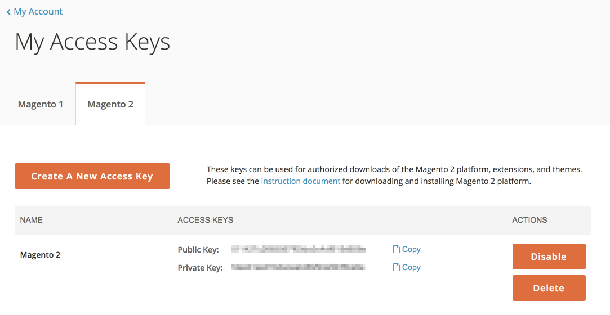
Cache legen
Om de cache te legen en andere benodigde acties van Magento 2 uit te voeren gebruik het volgende commando: rm -rf var/di/*; rm -rf pub/static/*; rm -rf var/cache/*; rm -rf var/pagecache/*; rm -rf var/generation/*; rm -rf var/dir/*; rm -rf var/view_preprocessed/*; php bin/magento cache:flush && php bin/magento setup:upgrade && php bin/magento setup:static-content:deploy && php bin/magento setup:static-content:deploy nl_NL && php bin/magento indexer:reindex1.3 Update
Om een update uit te voeren kun je het volgende commando gebruiken:
composer update myparcelnl/magento
Maak je momenteel gebruik van de MyParcel versie 1.x en zou je hem graag willen updaten naar een nieuwere
versie 2.x, dan zou je de onderstaande commando moeten gebruiken om laatste versie te installeren:
composer require myparcelnl/magento "~2.1"
Om de cache te legen en andere benodigde acties van Magento 2 uit te voeren gebruik het volgende commando:
rm -rf var/di/*; rm -rf pub/static/*; rm -rf var/cache/*; rm -rf var/pagecache/*; rm -rf var/generation/*; rm -rf var/dir/*; rm -rf var/view_preprocessed/*; php bin/magento cache:flush && php bin/magento setup:upgrade && php bin/magento setup:static-content:deploy && php bin/magento setup:static-content:deploy nl_NL && php bin/magento indexer:reindex
2. Configuratie
Ga naar het menu Stores → Configuration → MyParcel om de MyParcel extensie te configureren.

Verder zie je 4 tabbladen om uit te kiezen. Op het tabblad 'versie' kun jij zien welke versie jij van de plugin hebt geinstalleerd. Op het tabblad 'Algemene instellingen' kun je je API key invoeren en jouw printvoorkeur instellen. Op het tabblad 'Standaard verzendinstellingen' kun je de default voorkeuren voor de MyParcel verzendopties aangeven. Op het tabblad 'checkout instellingen' kun jij aanvullende verzendopties instellen waaruit jouw klant in de winkelwagen kan kiezen.
2.1 Algemene instellingen
API key instellen
Hier kun je jouw API Key invullen. Deze zijn nodig om de zendingen door te kunnen zetten naar MyParcel. Deze gegevens kun je vinden in jouw MyParcel account op backoffice.myparcel.nl en ga vervolgens naar Instellingen -> Algemeen

Print oriëntatie
Kies de Print oriëntatie. Als je kiest voor A4 formaat zullen vier verzendlabels
per A4 vel geprint
worden. Als je kiest voor A6 formaat zijn de verzendlabels geschikt voor het printen met een speciale
labelprinter zoals een Zebra of Dymo 4XL.

2.2 Standaard verzendinstellingen
Bij Standaard verzendinstellingen kun je configureren hoe je wil dat jouw zending standaard verwerkt worden wanneer je de MyParcel extensie voor Magento 2 gebruikt. 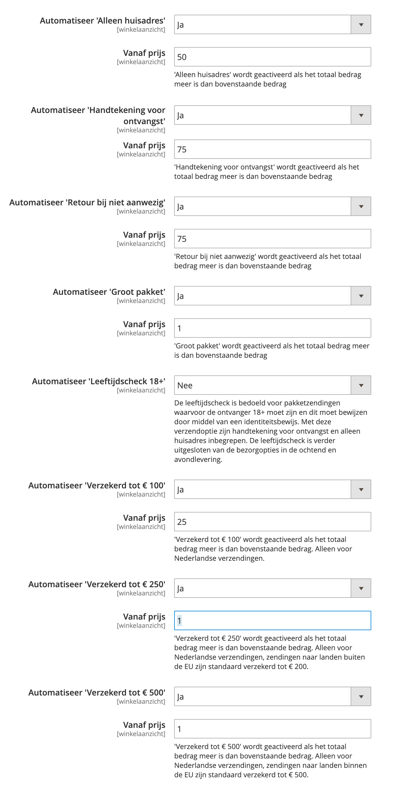
Standaard verzendopties
Op basis van de ingevulde orderwaarde worden de onderstaande opties geactiveerd. Voorbeeld: Indien je bij Verzekerd tot € 250 bijvoorbeeld de waarde 100 invult, worden orders met een verkoopwaarde boven de € 100 automatisch verzekerd tot een waarde van € 250. Deze logica is voor alle onderstaande opties in te stellen:
- Alleen huisadres
- Handtekening bij ontvangst
- Retour bij niet aanwezig
- Groot pakket
- Verzekerd tot € 250
- Verzekerd tot € 500
Let op: Op het moment dat Nee ingevuld staat, is de optie niet geactiveerd. Bij invullen van Ja staat de optie actief. Wanneer er bij 'Vanaf prijs' een 0 wordt ingevuld zal de optie ook actief zijn.
Leeftijdscheck 18+
De leeftijdscheck is bedoeld voor pakketzendingen waarvoor de ontvanger 18+ moet zijn en dit moet bewijzen door middel van een identiteitsbewijs. Met deze verzendoptie zijn handtekening voor ontvangst en alleen huisadres inbegrepen. De leeftijdscheck is verder uitgesloten van de bezorgopties in de ochtend en avondlevering.
2.3 Backend functionaliteiten
2.3.1 Verzending aanmaken
Een MyParcel zending aanmaken kan op twee manieren:
1. Batch methode in het bestellingenoverzicht.
- Selecteer de orders die je wilt exporteren naar MyParcel.
- Kies in de actie balk Print MyParcel labels
- Kies voor de juiste printpositie, indien je voor A4 hebt gekozen.
- Het PDF verschijnt op je computer en is klaar om te printen.
- Wanneer je de instellingen in stap 3 wil overslaan, bijvoorbeeld omdat je via de ‘standaard verzendinstellingen’ al de juiste verzendopties aan jouw bestellingen hebt meegegeven, dan kan je via ‘Print MyParcel labels direct’ je labels direct downloaden.
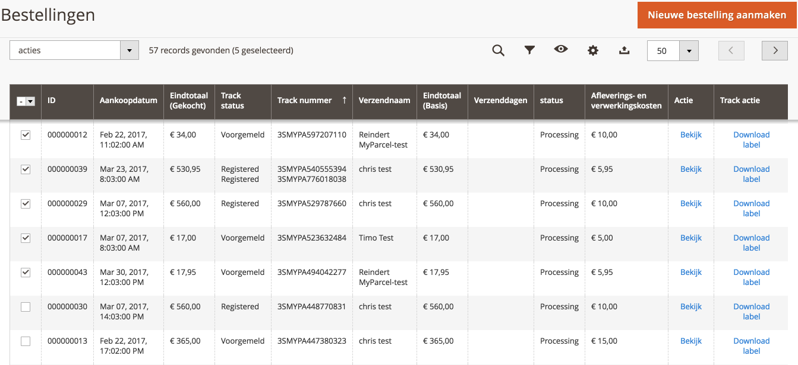
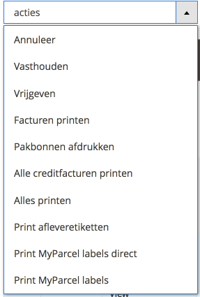

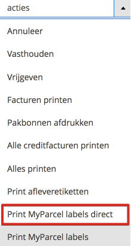
2. Per bestelling als je een Magento zending aanmaakt.
- Klik op de desbetreffende order.
- Kies rechtsboven voor de knop Verzenden. 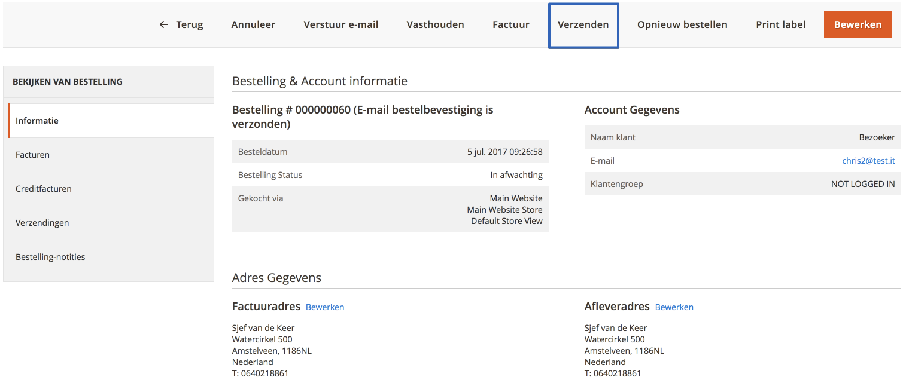
- Rechts onderin verschijnt een vak. Hier kan je zowel het verzendtype aanpassen als de beschikbare verzendopties per verzendtype.
- Verstuur zending naar MyParcel via Verzending InboekenDit zorgt ervoor dat er een concept verzending wordt aangemaakt.
- Vervolgens kun je meteen het label printen in de order door rechtsboven op de knop Print Label te klikken.
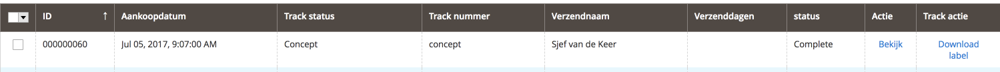
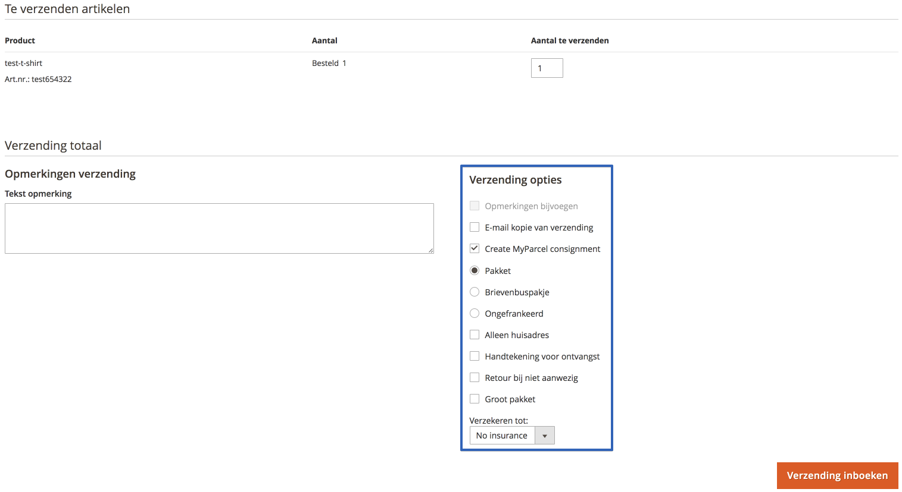
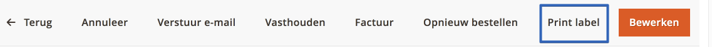
2.3.2 Multicollo zending
Naast het aanmaken van een enkele zending is het ook mogelijk om een multicollo zending aan te maken. Dit beteken dat er meerdere labels geprint kunnen worden, die bij elkaar horen.
Er zijn twee manieren om een multicollo zending aan te maken:
- In het orderoverzicht, bij acties
- In de order onder verzenden
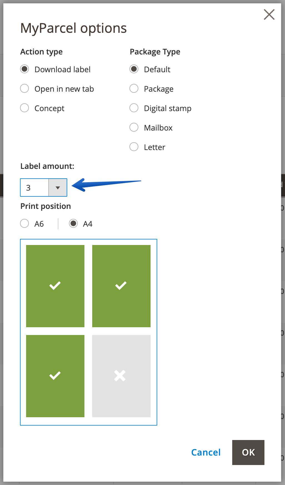 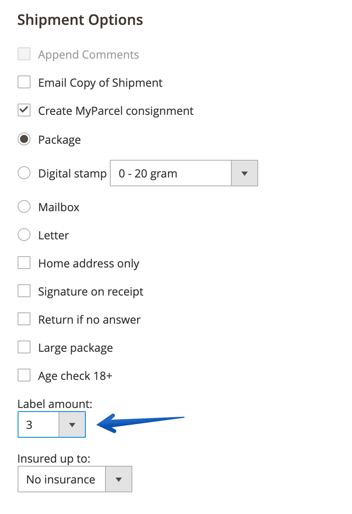
2.3.3 Orderoverzicht
Om je altijd inzicht te bieden in de status van jouw zendingen zijn er 3 nieuwe kolommen automatisch toegevoegd aan het orderoverzicht nadat de MyParcel plugin is geïnstalleerd.
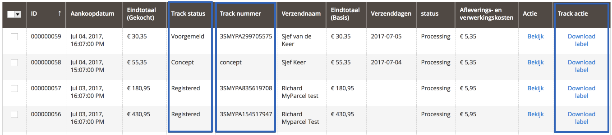- Track status : Hier kun je de status van de zending zien, deze wordt altijd up to date gehouden.
- Track nummer : Hier vind je de barcode van je zending.
- Track actie : Wanneer de order nog niet verzonden is en je klikt op 'Select', dan verschijnt er een pop-up met download opties voor verzendlabels. Mocht je order al verzonden zijn, dan kan je hier het label nogmaals downloaden.
2.3.4 Track&Trace e-mail template
Wanneer er een orderbevestigingsmail naar de klant gestuurd wordt vanuit Magento neemt deze de barcode van de zending automatisch mee. Dit hoeft nu niet apart ingesteld te worden. Mocht je nu toch een andere Track & Trace email willen willen versturen naar de klant vanuit Magento 2, ga dan naar 'Winkels' → 'Verkopen' → 'E-mails voor verkoop' → 'MyParcel barcode' en stel hier je eigen template naar wens in.
3 Checkout instellingen
Op het tabblad 'Checkout instellingen' kun je alle gewenste instellingen toepassen die zichtbaar zijn in de checkout. Dit tabblad wordt onderverdeeld in 'Basis instellingen' , 'Bezorging', 'Brievenbuspakje' , 'Ochtendlevering', 'Avondlevering' , 'Ophalen' en 'Extra vroeg ophalen'
3.1 Basis instellingen

3.1.1 Aantal dagen vooruit
Met de functie 'aantal dagen vooruit' kun je aangeven hoeveel dagen vooruit jouw klant een levermoment kan kiezen. Wanneer je kiest voor 7 dagen is laatste keuzemogelijkheid precies 7 dagen later. De dagen waarop er geen leveringen mogelijk zijn, worden niet weergegeven in de checkout. (zondag en maandag)
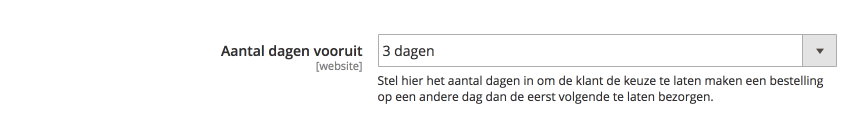In de afbeelding hierboven kun je zien dat er is gekozen om 3 dagen vooruit te laten zien. In de afbeelding hieronder kun je zien hoe jouw klant dit te zien krijgt in de checkout.
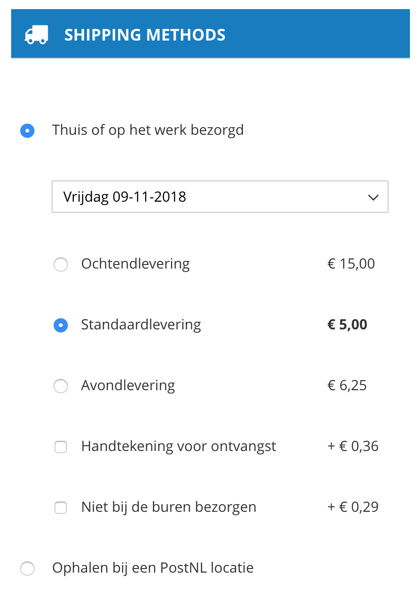
Laatste bestelmoment
Hiermee kun je instellen tot welk moment het mogelijk is voor jou een bestelling klaar te maken voor
levering. Indien jij hier tot 16:00 uur instelt, zullen alle klanten na dit tijdstip een latere dag in hun
checkout te zien krijgen als eerste levermogelijkheid.
Bijvoorbeeld: Jij hebt een verwerktijd van 1 dag en kunt tot 16:00 bestellingen verwerken. De bestelling
komt binnen op dinsdag 04 oktober om 16:02, de eerst volgende mogelijkheid voor jouw klant zou dan donderdag
06 oktober worden. Dit betekent voor jou dat je het pakket op woensdag zal inleveren bij een PostNL punt.
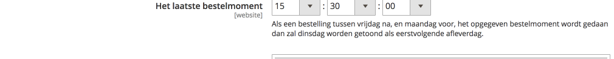
Verzenddagen
Bij de verzenddagen kun je invullen op welke dagen het voor jou mogelijk is pakketten in te leveren voor collectie op dezelfde dag. In de checkout wordt hier rekening mee gehouden qua keuzes die worden getoond aan jouw klant.
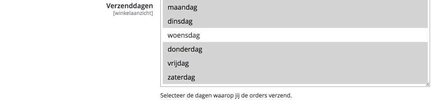Er kan ook gekozen worden om een pakket op maandag te laten bezorgen, houd er rekening mee dat je bij
verzenddagen wel de zaterdag selecteert als verzenddag.
Let op: Maandaglevering is alleen mogelijk
wanneer het laatste bestelmoment voor maandagbezorging op 14:30 is ingesteld en zaterdag het pakket voor
15:00 wordt geleverd bij één van de hiervoor bestemde
PostNL locaties.
Indien jij een langere verwerkingstijd nodig hebt om tot leveren over te gaan kun je dat hier aangeven. Hier zal rekening mee worden gehouden in het tonen van de beschikbare bezorgdagen in de checkout.
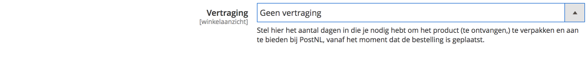3.2 Bezorging
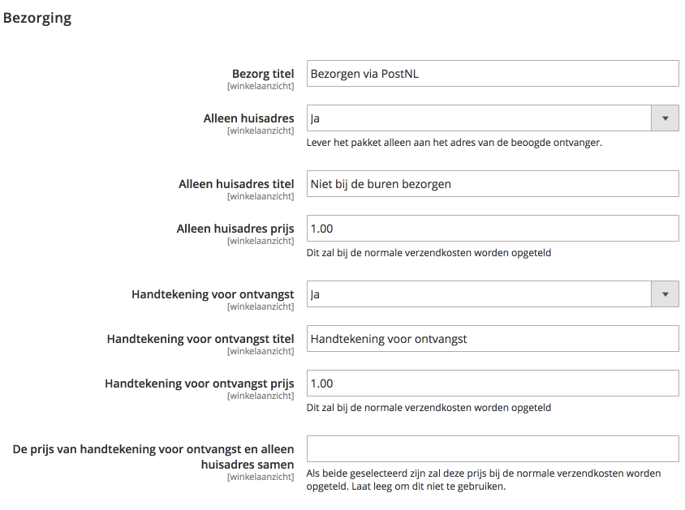Titel bezorging
Je kunt zelf kiezen welke titel jij de bezorging geeft. Het advies is om "Thuis of op het werk bezorgd" hierin te plaatsen.
Alleen huisadres
Je kunt hiermee aangeven of jouw klanten hier zelf voor kunnen kiezen in de checkout. Indien jij dit wilt weergeven in de checkout kies dan voor Ja. Ook is het mogelijk om aan deze optie een eigen naam mee te geven, in het voorbeeld is deze optie 'Niet bij de buren bezorgen' genoemd. Als laatste optie kun je er ook een meerprijs aan koppelen, in het voorbeeld kost deze optie € 0.27 extra.
Handtekening voor ontvangst
Je kunt hiermee aangeven of jouw klanten hier zelf voor kunnen kiezen in de checkout. Indien jij dit wilt weergeven in de checkout kies dan voor Ja Ook is het mogelijk om aan deze optie een eigen naam mee te geven, in het voorbeeld heet deze optie 'Handtekening voor ontvangst'. Als laatste optie kun je er ook een meerprijs aan koppelen, in het voorbeeld kost deze optie € 0.35 extra.
Er is ook een optie gemaakt voor een gecombineerde meerprijs voor de keuzes samenAlleen bij mij bezorgen en Handtekening voor ontvangst te bepalen. Je kunt zelf een prijs naar eigen inzicht invullen.
Brievenbuspakje instellingen
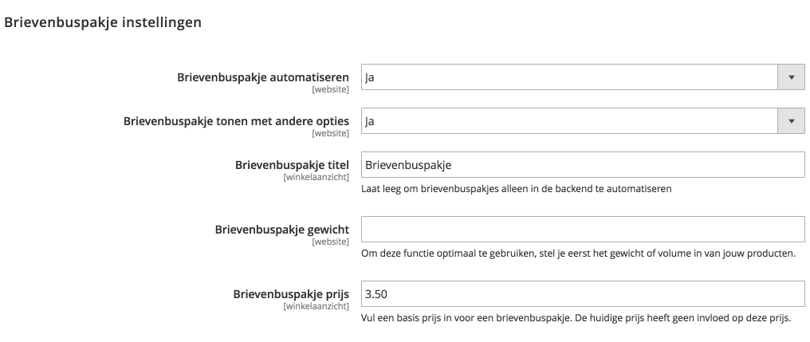Het is mogelijk om automatisch brievenbuspakjes te laten selecteren afhankelijk van de instellingen. Dit kan op basis van gewicht of volume welke jij kunt instellen bij de productgegevens.
Producten -> catalogus -> Klik op bewerken
Het is mogelijk om dit te tonen in de checkout waarbij jouw klant een keuze heeft. In dit geval zullen er meerdere verzendopties worden getoont, namelijk: Pakket, Brievenbuspakje en indien ingesteld de keuze om op te halen bij een PostNL locatie. Wil je liever niet deze keuze aan jouw klant bieden, kun je de titel leeg laten. In dit geval zal er alleen een brievenbuspakje worden aangemaakt bij MyParcel maar wordt het normale tarief berekend.
Digitale postzegel instellingen
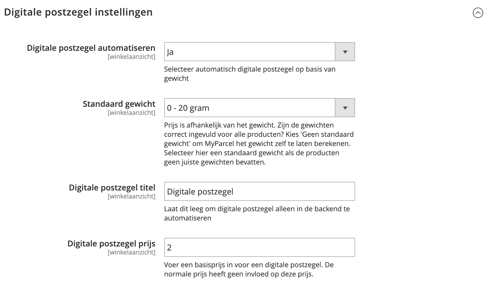Het is mogelijk om automatisch een digitale postzegel te laten selecteren. Dit is mogelijk met behulp van een aantal instellingen. Er zijn twee mannieren om het gewicht van een digitale postzegel te bepalen:
- Op basis van het totale gewicht van de zending
- Op basis van een standaard gewicht
Op basis van het totale gewicht van de zending
Bij de instelling Standaard gewicht is het mogelijk om de optie
Geen standaard gewicht te selecteren.
Met deze optie zal er automatich gekeken worden naar het totale gewicht van het pakket en zal hij verdeelt
worden in een specifieke gewichtsklasse.
Hiervoor moeten de gewichten bij de producten correct zijn ingevuld.
Op basis van een standaard gewicht
Naast het automatich berekenen van het gewicht is het ook mogelijk om een standaard gewicht in te stellen.
Mocht je bijvoorbeeld altijd een digitale postzegel willen versturen wat tussen de 20 en de 50 gram weegt.
Dan is het mogelijk om de optie te selecteren.
De volgende gewichtsklasse zijn te selecteren:
- 0 - 20 gram
- 20 - 50 gram
- 50 - 100 gram
- 100 - 350 gram
- 350 - 2000 gram
Om een digitale postzegel te kunnen automatiseren zal er een aanpassing gedaan moeten worden bij de producten die daadwerkelijk met deze verzendmethoden vestuurd gaan worden. Hiervoor moet de instelling Past in digitale postzegel aan staan.
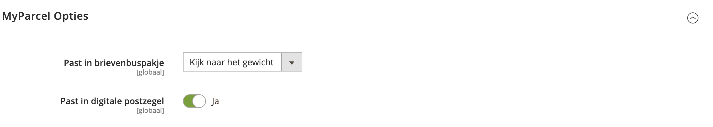Vervolgens zal op de chekout pagina een verzendmethoden te zien zijn, voor de digitale postzegel.
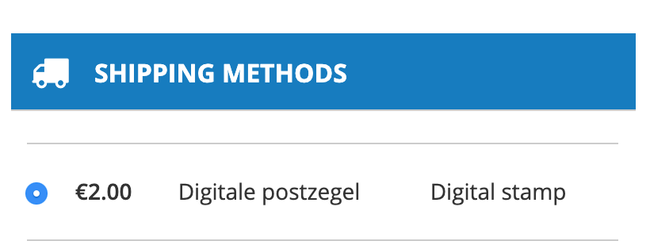Ochtendlevering
Het is mogelijk om jouw klanten de mogelijkheid te geven te kiezen voor ochtendlevering (bezorging tot 12:00). Wanneer je deze optie hebt geactiveerd zal er een extra keuzemogelijkheid verschijnen in de checkout. Tevens is het mogelijk hier een meerprijs aan te koppelen. De prijs die hier wordt ingevuld zal bij het huidige tarief worden opgeteld. Jouw klant ziet in de checkout het totaalbedrag van de zending.

Avondlevering
Het is ook mogelijk om jouw klanten de mogelijkheid te geven te kiezen voor avondlevering (bezorging vanaf 18:00 uur). Wanneer je deze optie hebt geactiveerd zal er net een extra keuzemogelijkheid verschijnen in de checkout. Tevens is het mogelijk hier een meerprijs aan te koppelen. De prijs die hier wordt ingevuld zal bij het huidige tarief worden opgeteld. Jouw klant ziet in de checkout het totaalbedrag van de zending.
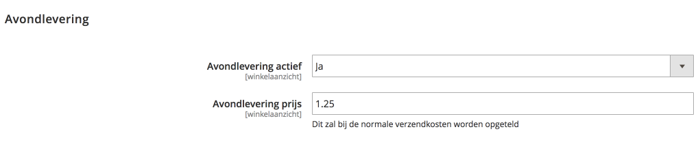Ophalen PostNL locatie
Met deze optie kunnen jouw klanten kiezen om hun pakket bij een PostNL locatie op te halen. Deze locatie kunnen zij zelf kiezen in de checkout. Je kunt hier eventueel ook een meerprijs voor rekenen.
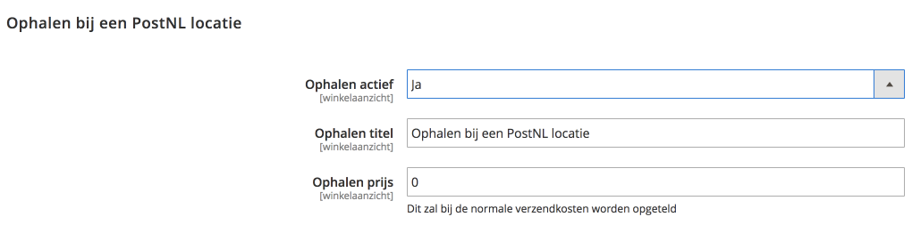Hieronder kun je een voorbeeld zien als de klant voor PostNL afhaallocatie kiest.
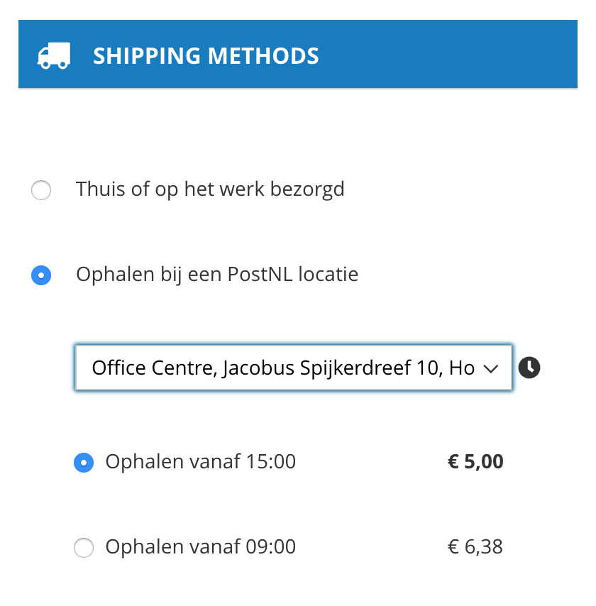Extra vroeg ophalen bij PostNL locatie
Ook voor het ophalen op een PostNL locatie is er een mogelijkheid om dit specifiek in de ochtend te doen (mogelijk vanaf 09:00 in plaats vanaf 16:00). Ook hierbij heb je de keuze om een meerprijs toe te voegen.
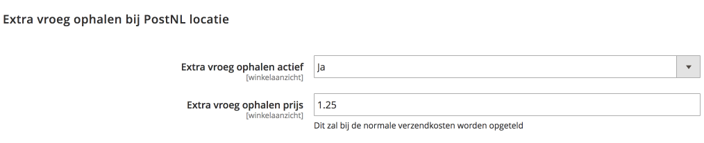België bezorgopties
Naast het feit dat het mogelijk is om jouw pakketten bij een Nederlandse PostNL punt te laten bezorgen, is het ook mogelijk om voor een Belgische PostNL punt te kiezen.
België thuislevering titel
De titel die je wilt gebruiken voor het thuis late bezorgen is aan te
passen ten optichte van een Nederlandse zending.
België standaard bezorgtitel
De titel die je wilt gebruiken voor een standaard levering naar
België is aan te passen ten optichte van een Nederlandse zending. Wanneer er geen titel is ingevuld, worden
de bezorgtijden automatisch zichtbaar.
4 Veel gestelde vragen
4.1 Ondersteunen jullie mijn checkout?
De volgende checkouts zijn getest en worden ondersteund:
- OnePageCheckout, dit is de standaard checkout van Magento.
- MagePlaza One Step Checkout v2.6.1
4.2 Ik gebruik een postcodecheck extensie, is dat een probleem?
Het mogelijk een postcodecheck extensie te gebruiken in combinatie met de MyParcel Magento 2
extensie. Doormiddel van de onderstaande link, kom jij op de site voor de door ons aanbevolen
extensie.
Postcode Checkout
Magento Extensie
4.3 Hoe kan ik gratis verzenden instellen?
Naast de Table Rates kun je ook gratis verzenden instellen via Marketing > Winkelwagen prijsregels.
- Klik rechts bovenin op Nieuwe regel toevoegen.
- Bij Regelgegevens geef je de regel een naam (voorbeeld: ‘gratis verzenden vanaf 50’). Zet de status op actief en kies bij websites en klantengroepen alle opties.
- Klik links boven op Voorwaarden en schrijf zelf de regel door op + te klikken. (voorbeeld: Subtotaal gelijk aan of groter dan 50)
- Ga naar de volgende stap acties en geef bij gratis verzending aan Alleen voor betreffende artikelen.
- Klik rechts bovenin op opslaan.